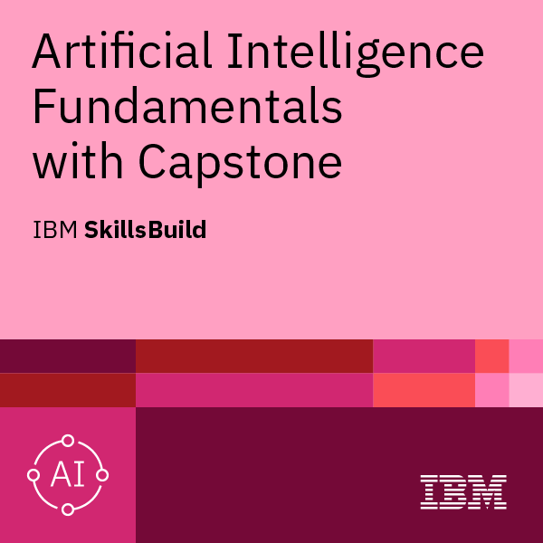

Fundamentos de la Inteligencia Artificial
Certificación introductoria que cubre conceptos básicos de inteligencia artificial como el procesamiento del lenguaje natural, la visión artificial, el aprendizaje automático, el aprendizaje profundo, los chatbots, las redes neuronales, la ética de la IA y sus aplicaciones .
Redes neuronales artificiales
Aplicaciones de IA
Inteligencia Artificial